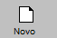

É aquele que fornece mercadorias ou serviços ao consumidor. Aperte no topico que deseja para conhecer a
funcionalidade de cada opção.
+Procedimento para cadastrar um fornecedor:
No sistema:
- Clique no ícone

ou pressione F3.
- Para que o sistema gere um código sequencial (automático), clique na lâmpada amarela
- Você pode, se desejar, informar/digitar o seu código de controle. Caso este código não esteja
utilizado,
o sistema permitirá o cadastro.
- Informe todos os campos pertinentes ao fornecedor e clique em Salvar (F10).
OBS.: Quando importar nota fiscal de entrada, caso o fornecedor não esteja
cadastrado, o
sistema pergunta se deseja cadastrar esse fornecedor, desde que tenha pelo menos um fornecedor
cadastrado.
As informações sobre cada campo estão no final da página.
+Como alterar os dados de um fornecedor?
- Pressione F3 e digite o código do fornecedor já cadastrado. Caso não saiba o código, clique em
consulta
(F6) e consulte pelo nome.
- Encontrado o fornecedor, faça as alterações desejadas e clique em Salvar (F10).
+É possível excluir o fornecedor?
Sim, mas deve-se atentar aos seguintes detalhes:
- Se houver alguma movimentação fiscal (nota fiscal de entrada ou saída) vinculada a este fornecedor,
a
exclusão não será permitida.
+Descrição dos campos do fornecedor:

- Nome: Informe a Razão Social do fornecedor.
- Abreviado: Como o fornecedor é conhecido. Exemplo: Sortee Desenvolvimento de
Sistemas
LTDA, Abreviado: Sortee.
- CEP: Digite o CEP, e o sistema pesquisará na base de dados da Sortee. Caso retorne
que
não encontrou os dados de endereço, digite esses dados da seguinte forma:
***RUA, NÚMERO (respeitando o espaço após a vírgula). Se não tiver número, coloque 0 ou
deixe
sem nada. Não coloque letras após a vírgula, pois em caso de emissão de Nota Fiscal Eletrônica
dará
erro.
- Bairro: Informe o bairro.
- Cidade: Informe a cidade.
- UF: Informe o estado.
- Contatos: Informe o nome do contato na empresa.
- CNPJ: Informe o CNPJ.
- Insc. Estadual: Informe a inscrição estadual.
- E-mail: Informe um e-mail para contato.
- Telefone: Informe o telefone para contato com o fornecedor. (Se tiver mais de um
telefone, digite na próxima linha).
- Regime: informe qual é o regime fiscal desse fornecedor, colocando o número ao qual
ele
pertence.
- Agenda:é um campo para que você possa anotar informações sobre esse fornecedor.
Para
acessar, clique em F11.
- Conta contábil:é fornecida pela contabilidade para exportação dos dados.